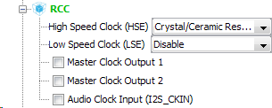
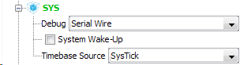
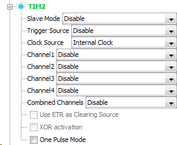
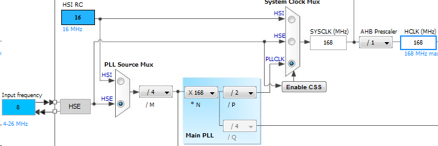
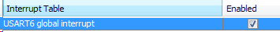
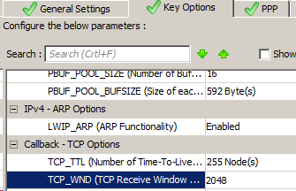

//*************************************


/* Private variables ---------------------------------------------------------*/
extern struct netif gnetif;
/* USER CODE END PV */
/* USER CODE BEGIN 3 */
//for ICMP:
ethernetif_input(&gnetif); //get our packet
sys_check_timeouts(); //wait for timeout
}
/* USER CODE END 3 */
Проверяем ping, ICMP должен начать проходить.
Создаем и подключаем файлы:
net.h
#pragma once
#include "stm32f4xx_hal.h"
#include <string.h>
#include <stdlib.h>
#include <stdint.h>
#include "lwip.h"
#include "lwip/tcp.h"
typedef struct USART_prop{
uint8_t usart_buf[26];
uint8_t usart_cnt;
uint8_t isTcpConnect; //status if connection is TCP (TcpStatus is better)
uint8_t isText; //status if transmission is text to server
} USART_prop_ptr;
void initNet(void);
void netCmd(char* bufStr);
void stringParse(char *bufStr);
void USART6_RxCpltCallback(void);
net.c
#include "net.h"
extern UART_HandleTypeDef huart6;
USART_prop_ptr usartProp;
char str[30];
char str1[100];
uint8_t ipAddrDest[4];
uint16_t portDest;
u8_t data[100];
struct tcp_pcb *client_pcb;
__IO uint32_t messageCount = 0;
static err_t tcpClinetConnected(void *arg, struct tcp_pcb *tcpb, err_t err);
void initNet(void)
{
usartProp.usart_buf[0] = 0;
usartProp.usart_cnt = 0;
usartProp.isTcpConnect = 0;
usartProp.isText = 0;
}
void tcpClientConnect(void)
{
ip_addr_t destIP;
client_pcb = tcp_new();
if(client_pcb != NULL)
{
IP4_ADDR(&destIP, ipAddrDest[0],ipAddrDest[1],ipAddrDest[2],ipAddrDest[3]);
tcp_connect(client_pcb, &destIP, portDest, tcpClinetConnected);
}
}
static err_t tcpClinetConnected(void *arg, struct tcp_pcb *tcpb, err_t err)
{
return err;
}
uint16_t portExtract(char* ipStr, uint8_t len)
{
uint16_t port = 0;
int ch = ':';
char *ss;
uint8_t offset = 0;
ss = strchr(ipStr, ch);
offset = ss - ipStr +1;
ipStr += offset;
port = atoi(ipStr);
return port;
}
void ipExtract(char* ipStr, uint8_t len, uint8_t* ipextp)
{
uint8_t offset = 0;
uint8_t i = 0;
char ss2[5] = {0};
char *ss1;
int ch1 = '.';
int ch2 = ':';
for(; i < 3; ++i)
{
ss1 = strchr(ipStr, ch1);
offset = ss1 - ipStr + 1;
strncpy(ss2, ipStr, offset);
ss2[offset] = 0;
ipextp[i] = atoi(ss2);
ipStr += offset;
len -= offset;
}
ss1 = strchr(ipStr, ch2);
if(ss1 != NULL)
{
offset = ss1 - ipStr + 1;
strncpy(ss2, ipStr, offset);
ss2[offset] = 0;
ipextp[3] = atoi(ss2);
return;
}
strncpy(ss2, ipStr, len);
ss2[len] = 0;
ipextp[3] = atoi(ss2);
}
void netCmd(char* bufStr)
{
uint8_t ip[4];
uint16_t port;
if(usartProp.isTcpConnect == 1)
{
ipExtract(bufStr, usartProp.usart_cnt-1, ipAddrDest);
portDest = portExtract(bufStr, usartProp.usart_cnt-1);
usartProp.usart_cnt = 0;
usartProp.isTcpConnect = 0;
tcpClientConnect();
sprintf(str1, "%d.%d.%d.%d:%u\r\n",
ipAddrDest[0],
ipAddrDest[1],
ipAddrDest[2],
ipAddrDest[3],
portDest);
HAL_UART_Transmit(&huart6, (uint8_t*)str1, strlen(str1), 0x1000);
}
if(usartProp.isTcpConnect == 2)
{
}
}
void stringParse(char *bufStr)
{
HAL_UART_Transmit(&huart6, (uint8_t*)bufStr, strlen(bufStr), 0x1000);
//connect to
if(strncmp(bufStr, "c:", 2) == 0)
{
--usartProp.usart_cnt;
usartProp.isTcpConnect = 1;
netCmd(bufStr + 2);
//other actions
}
else if(strncmp(bufStr, "d:", 2) == 0)
{
--usartProp.usart_cnt;
usartProp.isTcpConnect = 2;
netCmd(bufStr + 2);
//other actions
}
else
{
}
}
//USART function for RX interrupt
void USART6_RxCpltCallback(void)
{
uint8_t byte;
byte = str[0];
//if buffer size is exceeded
if(usartProp.usart_cnt > 25)
{
usartProp.usart_cnt = 0;
HAL_UART_Receive_IT(&huart6,(uint8_t*)str,1);
return;
}
usartProp.usart_buf[usartProp.usart_cnt] = byte;
if(byte == 0x0A) //carriage returning
{
//**************************************!!!!!!!!!!!!!!!!!!!!!!!!!
usartProp.usart_buf[usartProp.usart_cnt+1] = 0;
stringParse((char*)usartProp.usart_buf);
usartProp.usart_cnt = 0;
HAL_UART_Receive_IT(&huart6,(uint8_t*)str,1);
return;
}
++usartProp.usart_cnt;
HAL_UART_Receive_IT(&huart6,(uint8_t*)str,1);
}
main.c
/* USER CODE BEGIN Includes */
#include "net.h"
/* USER CODE END Includes */
/* USER CODE BEGIN 2 */
initNet();
/* USER CODE END 2 */
/* USER CODE BEGIN 4 */
void HAL_UART_RxCpltCallback(UART_HandleTypeDef *huart)
{
if(huart == &huart6)
{
USART6_RxCpltCallback();
}
}
/* USER CODE END 4 */